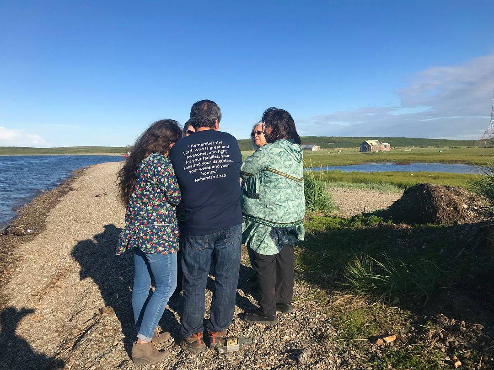
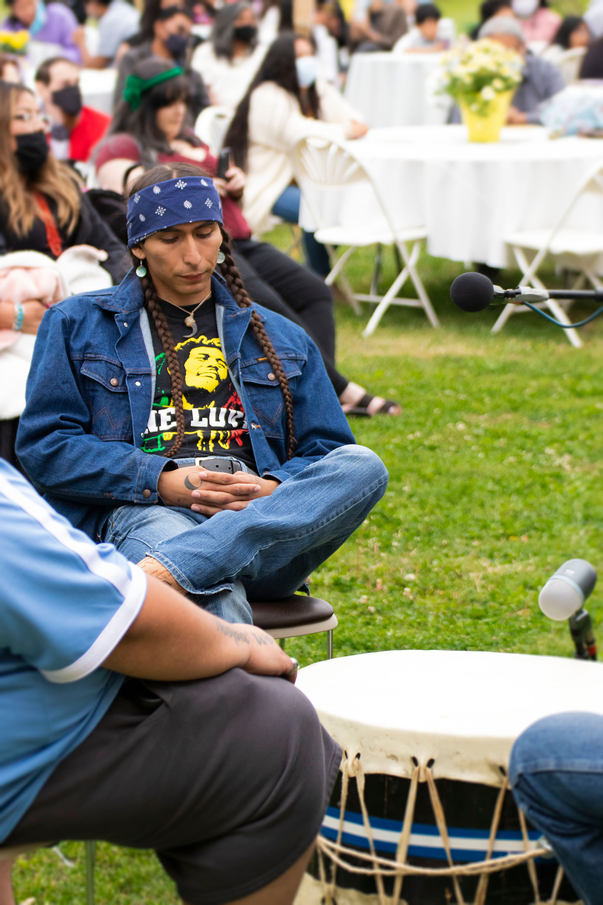
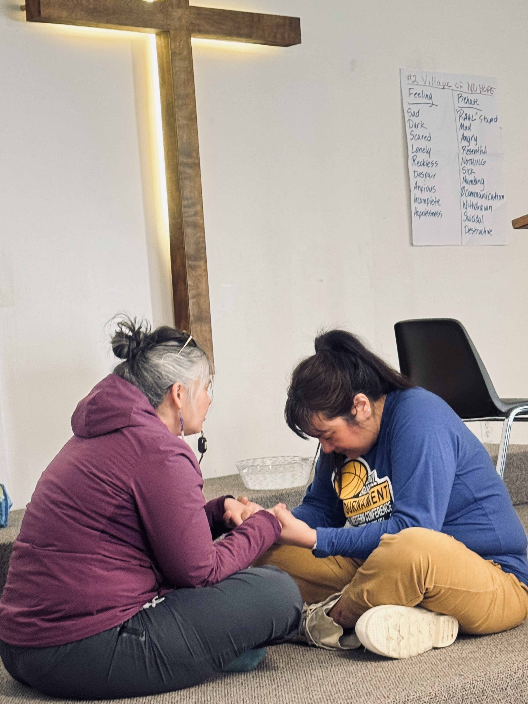
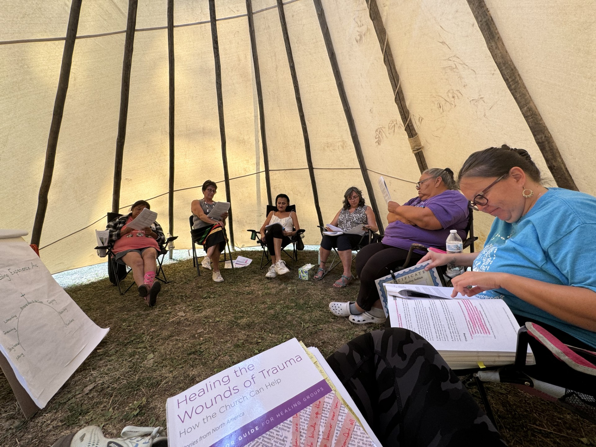
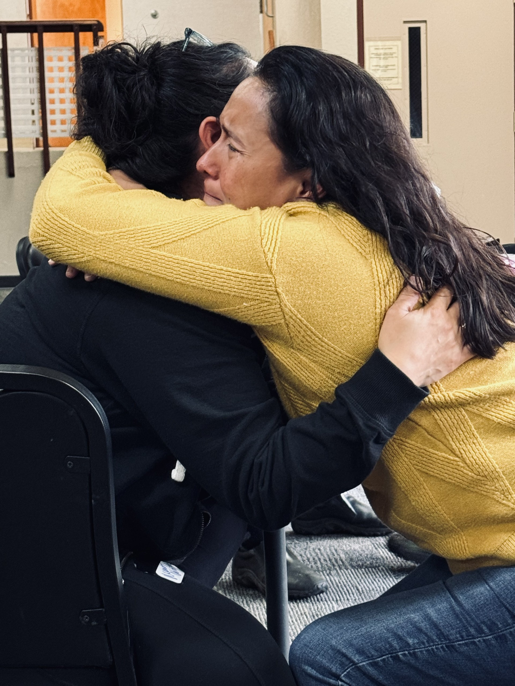
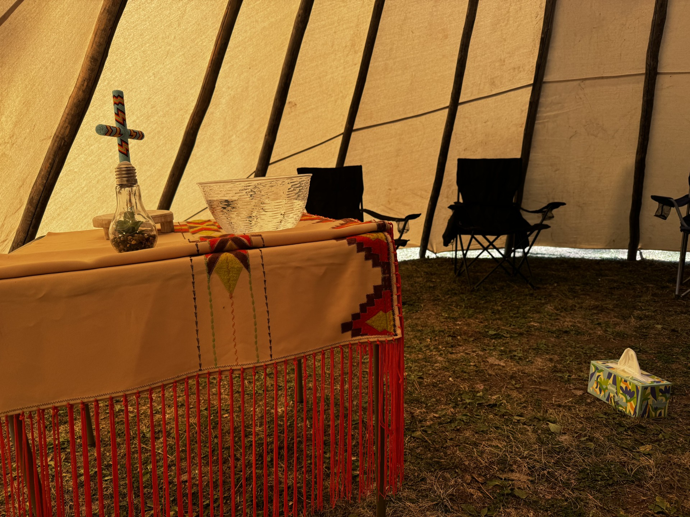
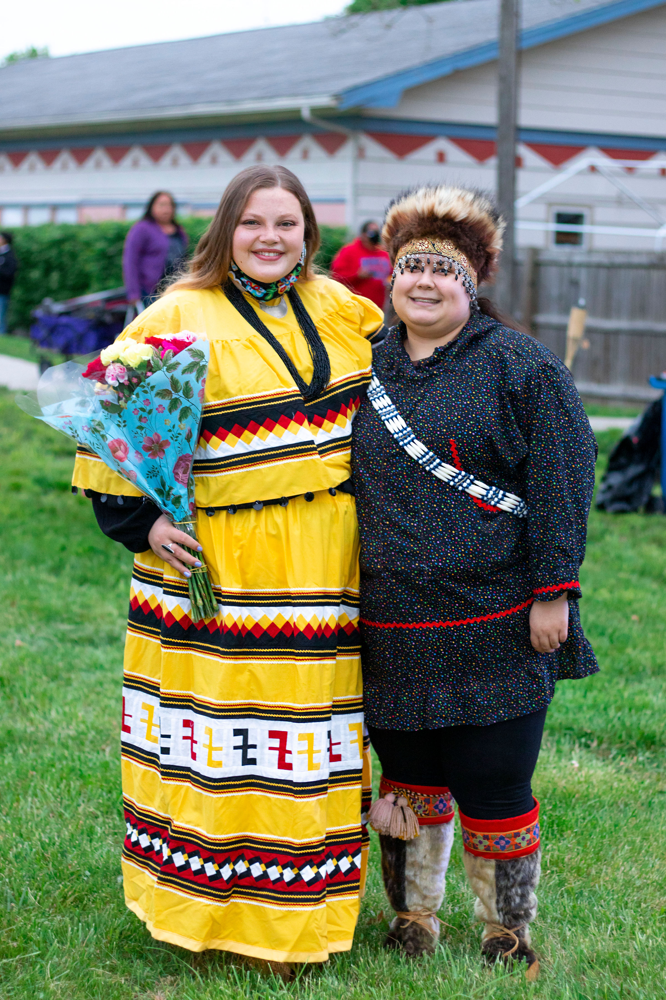
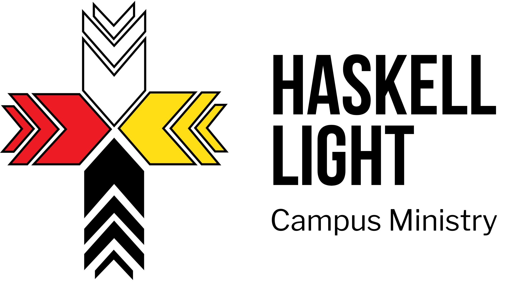
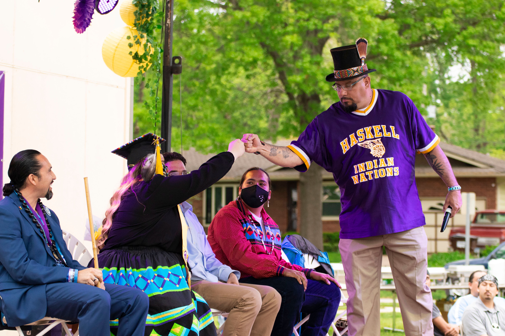
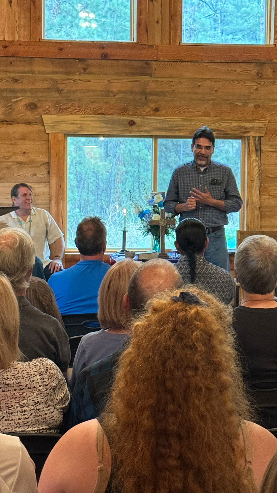

Pillar 01
Proclaim
Sharing the Gospel in culturally grounded ways — honoring Native traditions as vessels of God's grace. God speaks in Native tongues to Native hearts.
A Native-led ministry proclaiming the Gospel, discipling leaders, and healing generations of trauma across 574 tribal communities.
"There is a place where faith meets tradition, where God's healing touches the deepest wounds, and where hope rises from generations of silence. That place… is Lutheran Indian Ministries."
— Robert Heffle, Executive Director (Iñupiat Eskimo)
Our mission is to proclaim the Gospel of Jesus Christ with Native people — training Native leaders, nurturing healing, and witnessing Christ-centered growth. We are led by Native people who know the stories, the traditions, the culture, and the humor.
We don't show up with answers. We arrive with open hearts, traveling by small plane, boat, and snowmachine — by invitation, guided by tribal protocol and cultural humility.
Everything LIM does flows from three deeply integrated commitments — each one reinforcing the others in a whole-life approach to Gospel ministry.

Sharing the Gospel in culturally grounded ways — honoring Native traditions as vessels of God's grace. God speaks in Native tongues to Native hearts.

Developing Native leaders through campus ministry at Haskell Indian Nations University — a home away from home for students from 130+ tribes.

Healing the Wounds of Trauma — a life-changing, scripture-based program addressing generational trauma, grief, and loss in the safety of community.
A Bible-based small group program grounded in the American Bible Society model — led by Native facilitators, supported by prayer warriors, and open to everyone 18 and older regardless of faith background.
No pressure, no force. You come as you are and leave when the time is right. The Holy Spirit does the heavy lifting.
I got to let go of hurts and disappointments that I've experienced in my entire life. And talk about freedom. Oh, the freedom. I have a hard time putting into words how you feel so much lighter — how you feel so not shackled anymore.
— Roberta (Kitirak), Ministry Coordinator & Healing Group Participant
Anchorage, Alaska



Six core sessions over 16 hours walk participants through scripture and personal reflection. Each session builds on the last.
Perhaps the most honest question we carry. This session doesn't avoid it — scripture reveals that God is present in suffering, not absent from it. Participants discover that their pain is not a sign of abandonment, but of a God who weeps with them.
Heart wounds can begin in childhood, young adulthood, or today. This session helps participants name and understand their wounds — from abuse and loss to historical trauma. Naming the wound is the first step toward healing it.
Practical, scripture-based tools for the healing journey. Participants discover that healing is a process supported by community, prayer, and God's Word. Exercises move understanding from the head to the heart — which is where lasting change happens.
A compassionate look at what grief actually looks like — and where people get stuck. When Roberta learned that Jesus wept, it gave her permission to feel. Understanding grief and knowing you don't have to stay stuck is profoundly freeing.
One of the most powerful — and most difficult — sessions. Participants are gently led through releasing pain and beginning the journey of forgiving others. There is no force, no timeline. You go only where you are ready to go, supported by the community around you.
The closing session brings everything together — looking back at the journey and forward with hope. Participants also begin seeing how they can share this with their own communities. The healing group is not a one-and-done; it's the beginning of a lifelong journey.
Over 390 scriptures woven throughout all six sessions using the Restoring Hope Bible.
A Prayer Warrior is someone who has been through the healing group process and wants to support others without facilitating directly. They pray — before, during, and after every session — for every participant, for those who couldn't attend, and for the facilitators and host church.
No one is missed. Prayer Warriors also serve as a private resource: if someone needs to talk outside the group setting, a Prayer Warrior is there. Every healing group is fully prayed up before it begins.
Sessions held on reservations, in villages, in cities. In-person and online. Lunch provided at in-person sessions. All are welcome — no faith background required.



At Haskell Indian Nations University in Lawrence, Kansas — home to students from 130+ tribes — our campus ministry center is more than a gathering place. It's a home away from home.
Leo is Keetowah Cherokee and Western Shoshone. One day he asked Pola for a Bible — and shared it on social media. Leo began reading and didn't stop. Today, Leo is walking a new path, guided by faith.
Students come for meals and quilts, but stay for something deeper. A Bible study. A conversation. A reminder: "You don't have to change to be loved by God."
A safe circle for Native women students to share, pray, and grow together. Sister 2 Sister builds deep relational trust through shared faith and cultural identity — reminding each woman she is seen, known, and loved.
Real Warriors redefines strength for Native men — grounding true warrior identity in faith, responsibility, and community. A space for men to be vulnerable, honest, and held accountable in love.
Leadership development rooted in biblical principles for all Haskell students. What starts as comfort becomes a calling — and we walk with students every step of the way.
I got to let go of hurts and disappointments from my entire life. And talk about freedom. I feel so much lighter — not shackled anymore. I'm so thankful I said yes. I wish I could have done this decades ago.
"This was the first time I felt God's Word speak to my pain." We don't promise quick fixes — but we create safe spaces where people can gather, share, and heal while holding onto hope that only God's Word can give.

Can you imagine what it would be like if all our communities could be that helper to one another — scripture-rooted, safe, not judging, not forcing? Just coming from that place of love and grace. That is what this is.
You don't have to carry this alone. Healing Groups are open, safe, and led by people who understand the journey from the inside.
Your partnership makes it possible for LIM to reach every tribe, train every facilitator, and hold every healing group.
$100 sponsors a full healing group participant — all 6 sessions, rooted in God's Word.
Lutheran Indian Ministries shares the Gospel of Jesus Christ with Native people, encouraging them to proclaim Christ's Kingdom. We train Native leaders, nurture healing, and witness Christ-centered growth.
That one day, all nations will walk together in the light of Christ — restored, thriving, and sharing the cultural heritage God gave them.
All healing comes from God. Love is an action, not just an emotion. We listen before we speak, walk beside, and build relationships rooted in trust — not transactions.
LIM is led by Native people who know the stories, the traditions, the culture, and the humor. With 574 federally recognized tribes in the U.S. — 229 in Alaska alone — we travel by small plane, boat, and snowmachine to reach every community God calls us to serve.
We share the Gospel through culturally context-specific ways that honor Native epistemologies: oral tradition, storytelling, and visual metaphors that resonate with how Native communities have always understood the world.
LIM's conviction: God speaks in Native tongues to Native hearts. Faith in Christ does not require abandoning Indigenous identity. Native traditions are vessels of God's grace — not obstacles to faith.
At Haskell Indian Nations University in Lawrence, Kansas — the only federally operated tribal university in the country — our campus ministry serves students from more than 130 tribes. Students come for meals and quilts, but stay for something deeper.
Leo is Keetowah Cherokee and Western Shoshone. He visited our campus center and met Pola Farve — Haskell LIGHT Director and a Haskell graduate herself. One day, Leo asked Pola for a Bible. Touched by the moment, he shared it on social media. Leo began reading — and didn't stop. Today, Leo walks a new path, guided by faith.
For generations, Native communities have carried the weight of trauma — boarding schools, family separation, cultural erasure, and abuse. Healing the Wounds of Trauma addresses these wounds directly, through scripture, community, and the love of God.
From the beginning, participants are equipped to share with others. Trained facilitators take these tools back to their own communities — creating a ripple effect of healing across generations.
Secure online giving with credit/debit card, Apple Pay, and Google Pay. Set up monthly recurring giving to provide sustained support year-round.
Transferring appreciated securities is one of the most tax-efficient ways to give. Contact us to initiate a stock transfer directly to LIM's brokerage account.
Recommend a grant from your DAF to Lutheran Indian Ministries. Our EIN is available upon request.
If you are 70½ or older, you may make a tax-free gift directly from your IRA to LIM — up to $100,000 per year.
Include LIM in your will or trust and ensure Native Gospel ministry for generations to come. Contact us to discuss options.
Checks payable to Lutheran Indian Ministries · Brookfield, WI · Call (262) 439-5663 for mailing address.